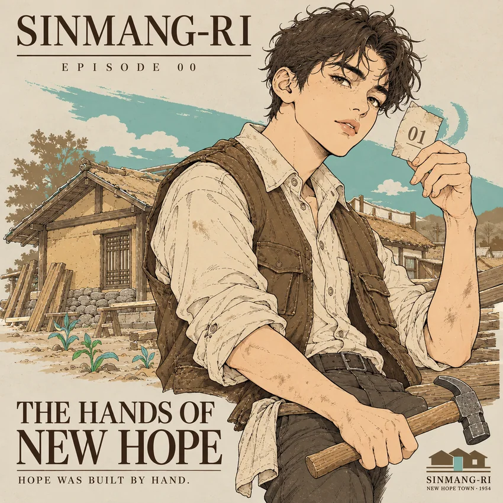

00THE HANDS OF NEW HOPE
희망을 짓는 손
집 번호표와 망치를 쥔 청년 새봄
이 장면의 문학 읽기 ↗
신망리, 새로운 희망이 마을의 이름이 되기까지
전쟁 이후 연천 상리에 지어진 100호의 집. 정착민의 노동, 번호로 불린 집과 철길 양쪽의 생활, 다음 세대에 남은 기억을 한 마을의 이야기로 펼칩니다.
경기도 연천군 연천읍 상리 · 지역문화 서사 아카이브
신망리의 이야기 읽기두 편의 글 전문과 일곱 장면의 흐름을 살펴보세요.
신망(新望), 새로운 희망을 바라본다는 이름. 이 마을의 이야기는 전쟁이 끝났다는 사실보다 그 뒤에 사람들이 다시 살아가기 시작했다는 사실에서 시작됩니다.
1954년 연천읍 상리의 경원선 서쪽에 미 육군 제7사단의 지원과 주민들의 노동으로 약 100채의 구호주택이 조성됐습니다. 계획된 도로와 집 번호, 철길을 사이에 둔 생활경제가 신망리의 독특한 공간적 특징을 만들었습니다.
OFFITA의 시리즈는 집 번호를 쥔 가상의 청년 '새봄'과 정착민들의 생활 장면을 바탕으로, 피난과 귀환에서 집짓기·밥상·학교·기억으로 이어지는 시간을 묘사합니다. 아래의 문학 서사와 사실 기반 칼럼은 서로 다른 방식으로 같은 마을을 읽도록 구성했습니다.
집 번호표와 망치를 쥔 청년 새봄
이 장면의 문학 읽기 ↗낯선 정착지에 도착한 피난민과 귀환민
이 장면의 문학 읽기 ↗목재를 나르고 흙벽을 바르는 사람들
이 장면의 문학 읽기 ↗번호표 01을 펼쳐 보는 손
이 장면의 문학 읽기 ↗구호주택 앞 가족의 소박한 식탁
이 장면의 문학 읽기 ↗경원선 양쪽에 형성된 주거와 상업
이 장면의 문학 읽기 ↗학교 가는 아이들과 마을을 기록하는 오늘
이 장면의 문학 읽기 ↗각 장면의 제목을 누르면 해당 문학 서사로 이동합니다. 개별 작품 이미지 원본은 아직 이 사이트에 연결되지 않아 장면별 요약과 대표 앨범 이미지로 먼저 안내합니다.
피난길의 먼지에서 흙벽과 밥상, 어린아이의 등굣길로. 집 번호표 하나가 한 사람의 삶을 가리키게 되는 시간을 따라갑니다.
EPISODE 00–06과 FINAL COVER를 연결한 문화적 서사문학입니다. 실제 지역사에 기초하되 인물의 독백과 대화, 가족의 관계, 현장감 있는 세부 행동은 예술적 상상으로 구성했습니다.
SINMANG-RI — NEW HOPE TOWN
백 채의 집, 그 안에 살기 시작한 사람들의 이야기
종이 한 장은 원래 이렇게 무거운 것이 아니었다.
바람이 불면 날아가고, 손에 땀이 배면 금세 구겨지는 것. 그러나 새봄은 그 종이를 좀처럼 내려놓지 못했다.
01.
어쩌면 다른 사람에게는 그저 숫자일 뿐인 두 글자였다. 하지만 그에게는 이제 비를 피할 지붕이 생기고, 밤이 되면 돌아갈 곳이 생길지도 모른다는 뜻이었다.
손에는 망치가 들려 있었다. 나무를 두드리고 못을 박으며 익숙해진 물건이다. 어깨에는 하루의 피로가 남았고, 소매에는 마르지 않은 흙먼지가 묻어 있었다.
그는 뒤편의 작은 집을 돌아보았다.
아직 손봐야 할 곳이 많았다. 문도, 벽도, 바람이 스며드는 틈도. 집 한 채가 생겼다고 해서 앞으로의 생활까지 완성되는 것은 아니었다.
그럼에도 이상했다.
아무것도 확실해진 것이 없는데, 적어도 내일 어디에서 눈을 뜰지는 상상할 수 있을 것 같았다.
새봄은 다시 종이를 바라보았다.
그 작은 숫자 앞에서 그는 처음으로 자신이 지어야 할 것이 집만은 아니라는 사실을 어렴풋이 깨달았다.
앞으로의 날들.
그 안에서 살아갈 자신의 삶까지.
먼저 도착한 것은 발소리였다.
흙길 위로 낡은 신발이 지나갈 때마다 마른 먼지가 일었다. 여자는 어깨에 걸친 보따리를 고쳐 멨다. 오래도록 몸에 붙어 있던 무게라 익숙할 법도 했지만, 길이 길어질수록 짐은 조금씩 더 무거워졌다.
곁의 남자는 멀리 보이는 집들을 바라보았다.
아직 완성되지 않은 집들이 있었다. 나무가 드러난 벽, 흙이 쌓인 터, 사람들이 오가며 무언가를 옮기는 모습.
그는 한동안 그 풍경에서 눈을 떼지 못했다.
저곳에서 살아갈 수 있을까.
입 밖으로 꺼내지는 않았지만, 그 질문은 걸음마다 따라왔다.
아이의 생각은 조금 달랐다. 아이는 길가의 풀을 바라보다가, 낯선 집의 지붕을 올려다보았다. 처음 보는 골목과 처음 듣는 사람들의 목소리가 궁금했다.
어른들은 돌아갈 곳을 생각했고, 아이는 앞으로 가 볼 곳을 생각했다.
그 차이를 서로 알지는 못했다.
그들이 지나온 길은 모두 같지 않았다. 누군가는 돌아오는 중이었고, 누군가는 돌아갈 수 없는 곳을 뒤에 남겨 두었다. 같은 길 위에서도 저마다 품고 있는 고향의 모양은 달랐다.
여자가 잠시 걸음을 멈추었다.
앞에는 아직 낯선 땅이 펼쳐져 있었다.
그녀는 보따리를 다시 고쳐 메고 아이를 불렀다.
"가자."
그 짧은 말에 특별한 확신이 있었던 것은 아니다.
다만 더는 길 위에서만 살 수 없다는 마음이 있었다.
그렇게 사람들은 신망리에 도착했다.
그때까지는 누구도 이곳이 자신의 오랜 기억이 될 줄 알지 못했다.
나무가 땅에 놓일 때마다 둔탁한 소리가 났다.
툭. 턱. 탁.
처음에는 서로 다른 소리였지만, 하루가 지나고 또 하루가 지나자 이상하게도 하나의 리듬처럼 들렸다.
청년은 어깨에 멘 목재를 내려놓았다. 팔이 저릿했고 손바닥에는 거친 나뭇결이 남아 있었다. 옆에서는 한 사람이 흙을 개었고, 다른 사람은 벽에 흙을 바르고 있었다.
나무로 세운 틀에 흙이 채워졌다.
어제까지 바람이 그대로 지나가던 자리에 오늘은 벽이 생겼다.
누군가 손바닥만큼 흙을 바르고 물러나면, 다른 누군가가 그 옆을 채웠다. 벽은 그렇게 조금씩 넓어졌다.
그들에게는 각자의 사정이 있었다. 어디에서 왔는지, 무엇을 잃었는지, 다시 만나고 싶은 사람이 누구인지 모두 달랐다.
그런데도 그 순간만큼은 같은 벽을 바라보고 있었다.
"이쪽 조금만 더."
누군가 말을 건네자 옆 사람이 고개를 끄덕였다.
서로의 지난날을 자세히 알지 못해도 함께할 수 있는 일이 있었다.
집을 짓는 일이 그랬다.
조금 떨어진 곳에는 비슷한 크기의 집들이 하나둘 모습을 드러냈다. 길이 생기고, 길을 따라 지붕이 이어졌다.
멀리서 바라보면 모두 비슷한 집처럼 보였을 것이다.
하지만 그 집들에는 서로 다른 사람들이 들어갈 예정이었다. 누군가는 홀로 밤을 보내고, 누군가는 가족과 함께 밥을 먹고, 누군가는 태어날 아이를 기다리게 될 것이다.
아직 아무도 그 안에서 살아 보지 않은 집들.
그럼에도 지붕 아래에는 벌써 수많은 내일이 기다리고 있었다.
청년은 손등에 묻은 흙을 털어냈다.
잠시 허리를 펴자 바람이 땀에 젖은 등을 스쳤다.
그리고 다시 나무를 들었다.
집은 그렇게 한꺼번에 완성되지 않았다.
사람의 손이 닿은 만큼, 조금씩 생겨났다.
종이를 펴는 데에는 몇 초도 걸리지 않았다.
그러나 그 몇 초 동안, 주변의 소리가 조금 멀어진 것 같았다.
엄지와 검지 사이에 끼워진 종이.
오랫동안 접혀 있었는지 가운데에는 희미한 자국이 남아 있었다. 한쪽 모서리는 조금 구겨져 있었다.
손끝이 천천히 움직였다.
01.
숫자가 모습을 드러냈다.
주변에서 누군가 몸을 앞으로 기울였다. 한 노인은 입가에 손을 가져갔고, 아이는 어른들의 얼굴을 번갈아 바라보았다.
아이에게는 그 숫자가 무엇을 뜻하는지 아직 어려웠다.
어른들은 알고 있었다.
저 숫자가 앞으로 자신들이 드나들 문을 가리킨다는 것을.
어느 길에서 돌아서야 하는지, 어디에 짐을 내려놓아야 하는지, 하루 일을 마치고 어디로 가야 하는지를 알려 주는 숫자라는 것을.
물론 종이 한 장이 모든 것을 해결해 주지는 못했다.
집 안에 무엇을 놓고 살 것인지, 내일 무엇을 먹을 것인지, 이곳에서 얼마나 오래 살 수 있을 것인지는 여전히 알 수 없었다.
하지만 그 모든 질문 앞에 아주 작은 변화가 생겼다.
이제는 자신의 집을 가리킬 수 있었다.
손은 잠시 종이를 펼친 채 머물렀다.
마치 너무 빨리 접어 버리면 숫자까지 사라질까 두려운 것처럼.
뒤편에서는 다른 사람들도 차례를 기다리고 있었다. 그들에게도 저마다의 숫자가 주어질 것이었다.
그렇게 무명의 집들이 하나씩 누군가의 집이 되었다.
일호집, 이호집, 삼호집.
처음에는 숫자였던 말들이 훗날에는 사람을 떠올리게 하는 이름이 될 것이다.
누가 사는 집인지, 어느 집에 아이가 태어났는지, 어느 집 굴뚝에서 저녁 연기가 올라오는지.
그런 것들이 숫자 위에 차곡차곡 쌓일 것이다.
종이는 다시 접혔다.
이번에는 아무렇게나 구겨 넣지 않았다.
손바닥 안에 조심스럽게 넣었다.
저녁이 되자 집 앞에 작은 밥상이 놓였다.
하루 동안 사람의 손이 오갔던 마당에는 아직 흙먼지가 남아 있었다. 벽에는 새로 바른 흙의 흔적이 보였고, 가까운 텃밭에서는 어린 잎들이 바람에 흔들렸다.
아이는 밥상 앞에 앉자마자 숟가락을 들었다.
무엇이 그리 즐거운지 혼자 웃음을 터뜨렸다.
여인은 아이의 그릇을 살피고, 노인은 건너편에 앉은 청년에게 음식을 조금 더 건넸다.
"먹어라."
짧은 말이었다.
하지만 누구도 그 말을 재촉으로 듣지 않았다.
청년은 그릇을 두 손으로 받았다.
아침부터 이어진 일 때문에 팔이 무거웠다. 손바닥에는 여전히 거친 감촉이 남아 있었고, 앉았다 일어나면 허리가 뻐근했다.
밥상을 내려다보았다.
많은 것이 놓인 것은 아니었다.
그래도 오늘은 이렇게 둘러앉아 먹을 것이 있었다.
아이의 숟가락이 그릇에 닿는 소리, 누군가 음식을 나누는 소리, 바람에 마당의 마른 잎이 스치는 소리가 뒤섞였다.
생각해 보면 집을 짓는 동안에도 수많은 소리가 있었다.
나무를 내려놓는 소리. 벽을 두드리는 소리. 흙을 개는 소리.
그런데 지금은 조금 다른 소리가 들렸다.
밥 먹는 소리였다.
누군가에게는 아주 당연한 소리였을 것이다.
그러나 이곳에서는 그 소리조차 쉽게 얻은 것이 아니었다.
내일도 오늘처럼 먹을 수 있을지는 알 수 없었다. 사람들은 여전히 일거리를 찾아야 했고, 밭을 일구어야 했으며, 고쳐야 할 곳이 남아 있는 집으로 돌아와야 했다.
그런데도 아이는 웃었다.
아이는 지금의 식탁을 특별한 사건으로 기억하지 않을지도 몰랐다.
훗날 어린 시절을 떠올릴 때, 그저 집 앞에서 함께 먹던 밥 한 끼로 기억할지 몰랐다.
어쩌면 그것으로 충분했다.
어른들이 어렵게 되찾으려 했던 것은 바로 그런 평범한 날들이었으므로.
그날 저녁, 집은 비로소 사람들이 사는 곳처럼 느껴졌다.
아침이면 마을은 저마다 다른 소리로 깨어났다.
어느 집에서는 문을 여는 소리가 났고, 어느 마당에서는 물을 길어 나르는 소리가 들렸다.
텃밭에 나가는 사람이 있었고, 일을 찾아 길을 나서는 사람도 있었다.
철길은 마을 사이로 길게 뻗어 있었다.
한쪽에는 집들이 이어지고, 다른 한쪽에는 사람들이 물건을 사고팔고 이야기를 나누는 가게들이 있었다.
다방에서는 찻잔이 놓이는 소리가 났다.
식당에서는 사람이 오가고, 가게 앞에서는 누군가 손님을 기다렸다. 군복을 입은 사람과 평상복을 입은 사람이 같은 거리를 지났다.
그렇게 마을에는 여러 종류의 걸음이 생겼다.
느린 걸음, 바쁜 걸음, 무거운 물건을 든 걸음, 퇴근길에 조금 느슨해진 걸음.
철길은 그 가운데 놓여 있었다.
멀리서 바라보면 철길은 마을을 둘로 나누는 선처럼 보였다.
그러나 살아가는 사람들에게 그 선의 양쪽은 서로 떨어진 세계가 아니었다.
집에서 나와 일을 하러 가고, 가게에서 물건을 구해 집으로 돌아오고, 누군가를 만나기 위해 다시 길을 건넜다.
하루에도 여러 번 사람들이 지나갔다.
어느새 집은 그저 잠드는 곳이 아니게 되었다.
집 밖에는 일터가 있었고, 가게가 있었고, 마주치면 인사하는 이웃이 있었다.
처음 이곳에 도착했을 때 사람들은 자신이 어디에서 살아야 할지를 생각했다.
그런데 이제는 조금씩 다른 질문을 하고 있었다.
어디에서 일할까.
누구를 만나러 갈까.
오늘 저녁에는 무엇을 사 갈까.
마을이란 그런 질문들이 오가는 곳인지도 몰랐다.
언젠가부터 사람들은 길을 설명할 때 집 번호만 말하지 않게 되었다.
철길 건너편, 다방이 있는 거리, 밭 옆의 작은 길.
그 말들 속에 신망리의 새로운 지도가 만들어지고 있었다.
아이들은 아침마다 같은 길을 걸었다.
신발 끝에 흙이 묻고, 가방이 어깨에서 흘러내리면 다시 고쳐 멨다.
세 아이가 나란히 걸으며 무슨 이야기를 나누었는지는 알 수 없다.
어제 배운 글자에 관한 이야기였을 수도 있고, 집에서 있었던 일이나 학교에서 만날 친구에 관한 이야기였을 수도 있다.
아이들에게 마을은 설명이 필요한 장소가 아니었다.
그저 자신들이 살고 있는 곳이었다.
돌아가면 밥을 먹을 집이 있고, 길을 따라가면 만날 친구가 있으며, 어제 뛰어놀던 골목이 오늘도 같은 자리에 있었다.
그렇게 하루가 지나갔다.
그리고 또 하루가 지나갔다.
어린 시절에는 시간이 오래 남아 있을 것처럼 느껴진다.
하지만 어느 날부터 사람은 자신이 걸었던 길을 기억 속에서 찾게 된다.
처음 집을 지었던 어른들은 나이를 먹고, 아이들은 자라서 또 다른 삶을 살아간다.
집의 지붕이 바뀌고, 벽이 고쳐지고, 새로운 길이 생긴다.
어떤 건물은 사라지기도 한다.
그렇게 세월이 흐른 뒤, 누군가 오래된 사진 앞에 선다.
사진 속에는 집들이 있다.
지금은 보이지 않는 길이 있고, 이제는 들을 수 없는 사람들의 목소리가 있을 것이다.
관람객은 사진을 조금 더 가까이 들여다본다.
저 문을 드나든 사람은 누구였을까.
저 골목에서는 어떤 이야기가 오갔을까.
어느 집에선가 저녁을 먹던 아이는 어디에서 어떤 어른이 되었을까.
사진은 대답하지 않는다.
대신 오래 바라보게 만든다.
지도에는 집이 있었던 자리가 남아 있고, 기록에는 그곳에서 살아간 사람들의 이야기가 남아 있다.
한때는 아무렇지 않게 지나던 길이 이제는 누군가가 찾아와 살펴보는 장소가 되었다.
아이들이 매일 걷던 흙길.
그 길의 일부는 사라졌을지 몰라도, 사람들은 여전히 그 길을 이야기할 수 있다.
기억은 건물보다 오래 남을 때가 있다.
그리고 그 기억을 다시 바라보는 사람이 있는 한, 오래전의 마을은 완전히 과거에만 머물지 않는다.
마지막으로 당신은 한 채의 집 앞에 선다.
나지막한 지붕 아래 작은 문이 열려 있다.
문 앞에는 청년이 서 있고, 길을 걸어온 사람들은 그 집을 향해 다가간다.
아이 하나가 먼저 앞으로 나선다.
청년은 아이를 향해 손을 내민다.
그 사이에는 아직 몇 걸음의 거리가 남아 있다.
그 짧은 거리 안에 얼마나 많은 시간이 담겨 있는지, 그들은 알지 못한다.
떠나온 곳에서 이곳까지의 시간.
집이 완성되기를 기다린 시간.
새벽마다 일어나고, 밭을 일구고, 식탁에 둘러앉고, 아이들이 자라기를 기다릴 시간.
문 하나를 사이에 두고 지난날과 앞으로의 날들이 마주 보고 있다.
처음 이 마을에 도착했을 때 사람들에게는 모든 것이 낯설었다.
흙길도, 집터도, 옆에 서 있는 사람들도.
그러나 시간이 흐르자 낯선 길은 매일 걷는 길이 되었고, 처음 만난 사람은 이웃이 되었으며, 번호로 불리던 집에는 가족의 이야기가 생겼다.
그렇게 누군가의 삶이 차곡차곡 쌓여 갔다.
이제 아이는 청년이 내민 손을 향해 한 걸음 더 다가간다.
아직 문 안에 무엇이 있는지 알지 못한다.
그곳에서 어떤 날들을 보내게 될지도 모른다.
좋은 날만 있는 것은 아닐 것이다.
다시 어려운 일이 찾아올 수도 있고, 언젠가는 이 집을 떠나야 할지도 모른다.
그럼에도 지금 문은 열려 있다.
들어갈 수 있는 장소가 있다.
기다리는 사람이 있다.
그리고 그곳에서 시작될 아직 아무도 살아 보지 않은 날들이 있다.
당신은 문을 바라본다.
오래전 누군가가 나무를 옮기고, 흙을 바르고, 손으로 벽을 세워 만들었던 집.
그 집이 완성되었다는 사실보다 더 오래 마음에 남는 것은 문 앞의 작은 풍경이다.
누군가가 도착하고,
다른 누군가가 손을 내밀고,
마침내 한 사람이 안으로 들어가는 모습.
어쩌면 신망리라는 이름의 희망은 처음부터 그렇게 크고 눈부신 것이 아니었을지도 모른다.
그저 돌아갈 곳이 생기는 일.
내일 다시 일어나 살아갈 수 있는 일.
그리고 문을 열었을 때 누군가를 맞이할 수 있는 일.
그런 작은 일들이 모여, 마을은 마을이 되었다.
백 채의 집이 세워졌다.
그리고 그곳에서, 헤아릴 수 없이 많은 삶이 시작되었다.
1954년의 100호 구호주택에서 오늘의 마을박물관까지, 연천 신망리의 역사·공간·생활문화를 실제 자료로 살펴봅니다.
신망리의 수복·정착·재건을 알기 쉽게 정리한 사실 중심 지역문화 칼럼입니다. 관람객이 지명과 집 번호, 철길·학교·지역기록을 이해할 수 있도록 구성했습니다.
SINMANG-RI — CULTURAL EDITORIAL
백 채의 집에서 시작된 연천 신망리의 이야기
경기도 연천군 연천읍에는 조금 특별한 이름을 가진 마을이 있다. 바로 신망리(新望里)다.
'새로울 신(新)'과 '바랄 망(望)'. 이름 그대로 새로운 희망을 바라본다는 의미를 담고 있다. 영어로는 New Hope Town이라 불린다.
마을의 이름에 이렇게 분명한 소망이 담기게 된 데에는 한국전쟁 이후의 역사가 있다. 신망리는 전쟁으로 삶의 터전을 잃은 사람들이 새로운 집을 마련하고 일상을 다시 시작했던 피난민 정착촌이기 때문이다.
그렇다면 이 작은 마을은 어떻게 탄생했을까?
신망리가 있는 연천 일대는 광복 이후 38선 이북에 속했다. 한국전쟁을 거쳐 대한민국의 관할로 들어온 이 지역은 '수복지구'로 불렸다.
수복(收復)이란 잃었던 지역을 다시 회복한다는 뜻이다. 1954년 10월에는 수복지구의 행정체계를 정비하기 위한 법률이 제정됐고, 같은 해 11월 17일부터 시행됐다.
그러나 행정권이 회복되는 것과 주민들의 생활이 회복되는 것은 다른 문제였다.
전쟁으로 파괴된 집과 생활시설을 다시 마련해야 했고, 고향으로 돌아온 사람들과 새로운 정착지를 찾는 사람들에게는 살아갈 공간이 필요했다.
이러한 상황에서 1954년 5월, 경원선 서쪽의 연천읍 상리 일대에 피난민 정착촌이 조성되기 시작했다.
당시 미 육군 제7사단은 마을의 계획과 설계, 건축자재를 지원했고, 정착민들도 직접 집을 짓는 일에 참여했다.
이렇게 세워진 집은 모두 100채였다.
신망리의 구호주택은 무질서하게 들어선 임시 거처가 아니었다.
약 3만 평의 부지에 도로와 주거구획을 계획적으로 마련하고, 세대당 약 100평의 대지에 건축면적 약 18평의 목조주택을 조성했다.
당시 주택은 오늘날의 넓고 편리한 주거공간과는 거리가 있었지만, 전쟁 이후의 주민들에게는 생활을 다시 시작하기 위한 중요한 기반이었다.
이 마을에는 또 하나의 흥미로운 이야기가 있다.
바로 집을 정하는 방식이다.
경기문화재단이 기록한 신망리의 역사에 따르면, 피난민들은 선착순으로 입주했고 제비뽑기를 통해 자신이 살 집을 배정받았다.
그렇게 정해진 집에는 '1호', '2호', '3호'와 같은 번호가 붙었다.
그런데 이 번호는 단순한 주택 식별번호로 끝나지 않았다. 시간이 흐르면서 마을 사람들은 각각의 집을 '1호집', '2호집'과 같은 이름으로 불렀다.
숫자가 곧 누군가의 집을 가리키는 말이 된 것이다.
이러한 독특한 호칭에는 신망리의 형성 과정이 고스란히 담겨 있다.
집이 마련되었다고 해서 모든 어려움이 사라진 것은 아니었다.
신망리 주민들은 농사를 짓고, 군부대 주변에서 일거리를 찾으며 생계를 이어 갔다. 경기문화재단의 마을아카이브에는 사격장 주변에서 탄피를 수집하거나 부족한 식량을 마련하기 위해 어려움을 겪었던 생활상이 기록되어 있다.
전쟁 이후에는 지뢰와 불발탄에 따른 피해도 있었다.
따라서 신망리의 역사를 단순히 희망찬 정착촌의 탄생으로만 이해하기는 어렵다.
이곳에서 희망은 모든 문제가 해결된 상태를 의미하지 않았다. 어려운 생활조건 속에서도 집을 유지하고, 생업을 마련하고, 가족과 이웃의 일상을 이어 가는 과정과 맞닿아 있었다.
이 점에서 신망리는 전후 재건의 의미를 구체적으로 살펴볼 수 있는 곳이다.
재건은 집과 도로를 새로 짓는 일인 동시에, 사람들이 그 공간에서 다시 생활할 수 있도록 만드는 일이었기 때문이다.
신망리의 공간적 특징을 이해할 때 빼놓을 수 없는 것이 경원선이다.
경원선 서쪽에는 구호주택을 중심으로 한 주거지역이 형성됐고, 동쪽에는 군인과 주민들의 생활에 필요한 상업공간이 발달했다.
특히 철길 동쪽에는 '다방거리'라는 이름이 남아 있다.
연천군의 지명유래 자료에 따르면, 이곳은 1954년 수복 이후 연천읍에서 처음으로 다방이 생긴 데서 이름이 유래했다.
다방은 차를 마시는 장소이면서 사람들이 만나고 교류하는 공간이었다. 주변의 식당과 상점 역시 군부대가 주둔한 접경지역의 생활경제와 연결되어 있었다.
신망리의 철길은 단순한 교통시설이 아니라 주거와 상업, 주민들의 이동과 생업이 이루어지는 마을의 공간적 중심축이었던 셈이다.
주변의 낮은 산지와 농촌 풍경, 철길을 따라 이어지는 작은 생활공간을 함께 바라보면 신망리가 어떻게 하나의 생활권으로 형성되었는지 짐작할 수 있다.
신망리의 변화는 학교의 역사에서도 확인할 수 있다.
1954년 8월 2일, 연천국민학교의 분교가 문을 열었고 이듬해인 1955년 4월 2일에는 상리국민학교가 4학급으로 정식 개교했다.
1996년에는 오늘날의 상리초등학교로 이름을 바꾸었다.
전후 정착촌에 학교가 마련되었다는 사실은 중요한 의미를 갖는다.
집을 잃고 이동해야 했던 사람들의 마을에서 아이들이 교육받고 성장하는 생활공동체가 형성되고 있었음을 보여 주기 때문이다.
주택 건설로 시작된 신망리의 역사는 이렇게 교육과 생업, 이웃 사이의 교류를 통해 점차 여러 세대의 삶을 담는 역사로 이어졌다.
세월이 흐르면서 신망리의 모습도 크게 달라졌다.
초기에 건설된 구호주택들은 대부분 개조되거나 철거되었고, 당시의 건축 형태를 온전히 확인하기는 어려워졌다.
그러나 마을의 역사까지 사라진 것은 아니다.
과거의 계획도로와 주거구획, 집 번호에 얽힌 이야기, 주민들이 기억하는 생활과 장소에는 정착촌의 흔적이 남아 있다.
이러한 기억을 보존하려는 움직임도 이어졌다.
경기문화재단은 2018년 신망리의 역사와 주민들의 삶을 기록한 《경기북부 마을아카이브 프로젝트: 연천 신망리》를 발간했다.
이후 에코뮤지엄 사업을 통해 주민들의 생활사와 마을의 공간구조를 조사하고, 구호주택 복원 설계도와 옛 지적도 등을 전시하는 마을박물관 사업도 진행했다.
2021년 12월에는 옛 신망리역을 활용한 마을박물관이 개관했다.
기차역이 지역의 역사와 기억을 전하는 문화공간으로 새롭게 활용되기 시작한 것이다.
신망리의 역사에는 피난민 정착촌이었던 과거뿐 아니라, 그 역사를 기록하고 새로운 세대에게 전달하려는 오늘날의 노력도 함께 담겨 있다.
신망리는 거대한 전쟁기념물이나 화려한 관광시설보다, 작은 집과 길 그리고 주민들의 생활사를 통해 역사적 의미를 발견할 수 있는 마을이다.
한때 이곳에는 100채의 집이 들어섰다.
주민들은 집 번호를 배정받았고, 새로운 공간에서 일하고 생활했다. 그 뒤로 학교가 생기고, 상업공간이 형성되고, 여러 세대의 시간이 쌓였다.
처음에는 피난민을 위한 정착촌이었지만, 시간이 흐르며 사람들의 기억을 품은 고향이 된 것이다.
그래서 신망리를 이해하는 중요한 열쇠는 마을의 이름에 있다.
신망(新望), 새로운 희망을 바라보는 마을.
이 이름은 전쟁 이후 새로운 삶을 시작해야 했던 사람들의 상황과 기대를 함께 떠올리게 한다.
신망리의 역사를 따라가다 보면 수복이라는 말도 조금 다르게 다가온다.
수복은 국가적으로 잃었던 지역을 회복하는 일이었지만, 그곳에 살던 사람들에게는 집과 생업, 이웃과 일상을 다시 만들어 가는 과정이기도 했다.
신망리는 땅의 수복 이후, 사람들의 삶이 어떻게 다시 자리를 잡아 갔는지를 보여 주는 마을이다.
그리고 오늘날에도 그 역사를 기억하고 기록하는 일을 통해 '새로운 희망'이라는 이름의 의미를 이어 가고 있다.
나무를 옮기는 소리, 밥그릇이 놓이는 소리, 철길 곁의 발걸음과 열린 문에서 시작되는 사운드 구상입니다. 현재 음원은 등록되지 않았습니다.
음원이 등록되면 이 영역에 연결합니다. 자동재생은 사용하지 않습니다.
옛 신망리역을 활용해 마을의 공간과 주민들의 기억을 전시해 온 곳입니다. 방문 전 전시·운영 여부를 확인하세요.
박물관 소개 확인 ↗구호주택, 집 번호, 마을 지도와 주민의 정착기록을 살펴보는 중요한 자료집입니다. 현장 방문 전 역사적 배경을 이해하는 데 도움이 됩니다.
아카이브 읽기 ↗이 페이지는 문화예술·지역사 해설 콘텐츠입니다. 실제 운영시간·열람 가능 여부 및 교통 상황은 방문 전에 확인하세요.